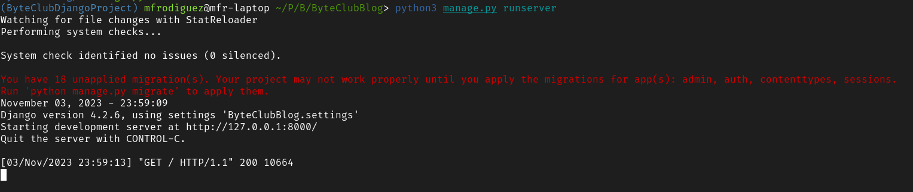
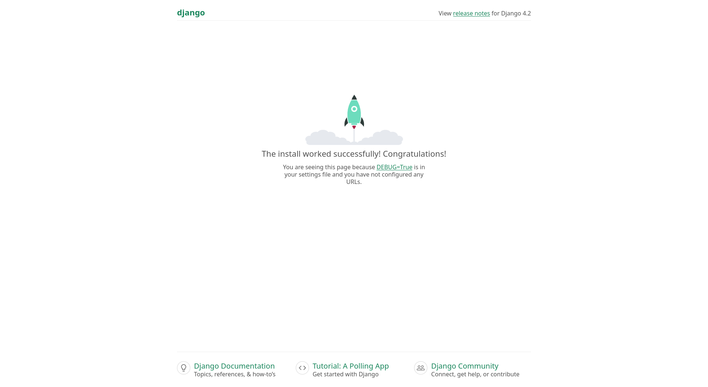

Now that we have Django installed, we can get started by setting up the project.
To setup the project on Replit, go to the homepage, click "Create Repl", and use the Django template. After
you've done this, you should see an editor. However, we still cannot run the project yet, as Django projects
require a random secret key, which isn't generated by Replit. To generate it, open the Shell tab, which can
be found on the right, next to the console. Then open an interactive Python shell by typing
python3 into the shell. From there, input the following into the prompts:
import secrets
secrets.token_urlsafe(32)
Copy the output minus the quotes, and then find the Secrets button, which should be in the bottom left corner. There, type "SECRET_KEY" on the left, and paste the output on the right. This will allow our Django project to use this new key. Once this is done, click the run button to start the Django project. You should see a webview pop up, confirming everything works.
To set up our Django project on a computer, navigate to the directory where we created the virtual environment. Activate this virtual environment. From there, run the following command to create a new Django project:
django-admin createproject ByteClubBlog
This will create a folder called ByteClubBlog inside our virtual environment. This folder will contain all
our project code. You can enter this folder by running cd ByteClubBlog. Then, run the following
command to start the server locally:
<python command here> manage.py runserver
From now on, I'll be using the Linux command for Python. Whenever you see python3, just replace
it with the Python command your system uses.
Something like this should appear:
You should be able to click on the link, or type the address into your browser and see the result:
The address127.0.0.1is a special one, as it refers to your local computer. You can replace it withlocalhostin the URL bar and nothing will change. This is becauselocalhostalso refers to your computer.
From now on, you can start your Django server like this. To stop it, simply type CTRL+C in the terminal.
Next, open this folder in your favorite code editor. I generally recommend Visual Studio Code for beginners, but you can use any you like. I myself will be using Neovim. And now, we can almost get to coding!
If you examine the the file structure, you'll see something like this:
Here is what each file does:
manage.py helps us the developer interact with the project, like running it, setting up
the database, and creating applicationsByteClubBlog/ directory is the entry point for the website__init__.py is just an empty file that makes it so Python treats our project like a module
settings.py is where all of the settings for our website live, like any applications we
create (which we will), the location of our static files (images, Javascript, CSS) and database
configuration
asgi.py and wsgi.py are boilerplate code that is useful when deploying our code
to production. We don't really have a need to mess with it. For now just understand that it is important
when deploying our website.
urls.py is where some of our URL routing lives. As you may remember, when our website
receives a GET requests, the urls.py file points it to the matching view to receive a
response. This urls.py file is project-wide. While we could use it to match every URL to a
view, it is much more common to delegate it to particular applications.
A website may have multiple components, such as a home page, a profile page, a blog page, etc. Django lets you group the code for similar pages together in applications. For example, we will group everything that has to do with blogging functionality in a blog application, and everything that has to do with users in a users application. Each application has it's own views, and database schemes. We will touch on this later on.